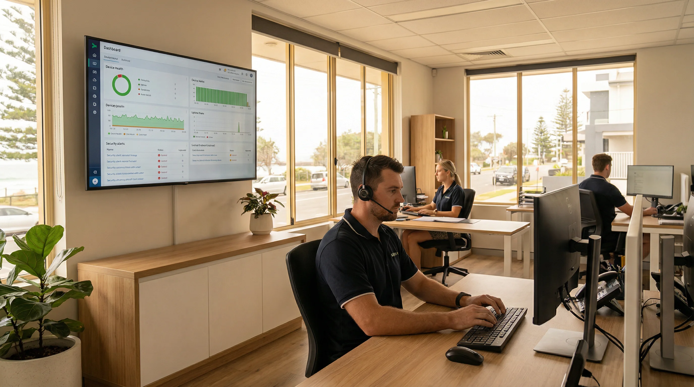
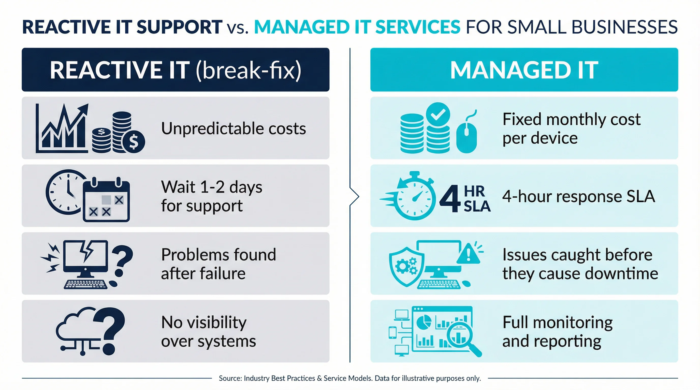

Tired of dealing with IT problems after they’ve already cost you time and money? bcom ICT provides managed IT services for Gold Coast small businesses with 5–20 staff — proactive monitoring, help desk support, cybersecurity, backup monitoring and Microsoft 365 management, all for a predictable monthly fee per device. Month to month, no lock-in contracts.
bcom ICT provides proactive managed IT services for small businesses across the Gold Coast. We deliver unlimited remote support, system monitoring, and IT consulting for a predictable monthly fee.
Most Gold Coast small businesses manage IT reactively. Something breaks, you call for help, pay an invoice, and hope it does not happen again. This approach has three problems: downtime costs your business money while you wait for support, you have no visibility over the health of your systems until something fails, and IT costs are unpredictable — a bad month can mean several large invoices arriving at once.
Think about what happens when a server goes down in a Robina office on a Tuesday morning. The first person to notice is usually a staff member who cannot access a shared drive or print a document. By the time the issue is escalated, a support call is logged and a technician is scheduled, half the day is gone. The business has lost hours of productive time, and the invoice arrives a week later. That is the reality of break-fix IT support for most Gold Coast small businesses.
The other problem with reactive IT is that you have no way of knowing what you do not know. Your backups might be failing silently. A device on your network might have a hard drive showing early signs of failure. Your Microsoft 365 accounts might have weak passwords or no multi-factor authentication. None of these issues are visible until they become a crisis. By then, the cost — in time, data, and money — is already real.
You find out about IT problems when staff report them — usually after they have already caused disruption.
We monitor your devices and systems around the clock and resolve issues proactively — before they affect your team.
IT support costs vary month to month. A server fault or security incident can mean a large unexpected invoice.
A fixed per-device monthly fee covers your routine IT support. You know your IT cost before the month begins.
Standard ad hoc customers are typically scheduled 1–2 business days out for non-critical faults.
Managed customers receive a 4-hour response SLA for both remote and on-site support — for every fault, not just critical ones.
Managed IT is not the right fit for every Gold Coast business. If your team rarely has IT issues and your current setup is stable, ad hoc support may be more cost-effective. If IT problems are a recurring cost, your team regularly waits for support, or you have no visibility over whether your backups and security are actually working — managed IT is worth the conversation. Call 07 3041 8993 and we will give you an honest assessment. Learn about our IT needs assessment service.
For Gold Coast businesses with 5 to 20 staff, managed IT typically pays for itself in the first month where a major IT issue would otherwise have occurred. The monthly fee is predictable and budgetable. There are no surprise invoices for routine maintenance, no callout fees for remote support, and no waiting days for a technician to become available. Your team gets help when they need it, and your systems are looked after before problems develop.
Every managed IT package is tailored to your Gold Coast business — the devices covered, software managed and scope of support are agreed upfront. The following services are included as standard across all managed IT engagements. On-site support visits are available when needed and charged at our standard rate, prioritised within the 4-hour SLA. This service is part of our broader IT support & services Gold Coast offering.
A common question from Gold Coast business owners is what “monitoring” actually means in practice. It means that software agents run quietly in the background on every covered device and server. They report back on CPU usage, memory, disk health, software update status, backup completion and security events. When something falls outside normal parameters — a disk showing warning signs, a backup that did not complete, a device running an outdated Windows version — we are alerted and act before it becomes a problem for your team.
All covered devices and servers monitored remotely around the clock. Performance issues, hardware warnings, failed services and security alerts identified and acted on before they cause downtime at your Gold Coast business.
Your Gold Coast team can call or email for IT support and receive a response within the 4-hour SLA. Remote support handled via secure connection — most issues resolved without an on-site visit.
Threat detection and security monitoring across all covered devices on your Gold Coast business network. Security alerts reviewed and responded to as part of your managed IT package — not as a separate billable event.
Windows updates, driver updates, software patching and routine maintenance scheduled and applied across your Gold Coast business devices — proactively managed so your team never has to think about it.
Your business backups checked and verified regularly — not just assumed to be working. Backup failures flagged and resolved before you need to rely on them at your Gold Coast business.
User accounts, licences, Outlook, Teams, OneDrive and SharePoint monitored and maintained for your Gold Coast business — including new user setup, licence changes and access management.
On-site support visits are not included in the monthly managed IT fee but are available when needed and prioritised within the 4-hour SLA. On-site visits are charged at our standard call-out fee and hourly rate. Major projects — hardware upgrades, infrastructure replacements, new office setups and network installations — are quoted separately. Your managed IT package covers day-to-day monitoring, support and maintenance. Everything else is quoted clearly before any work begins.
Not sure what your Gold Coast business needs? Call 07 3041 8993 and we will walk you through what a managed IT package would look like for your team size and setup — no obligation.

Cybersecurity monitoring is one of the most overlooked parts of managed IT for Gold Coast small businesses. Many business owners assume that because they have not been targeted before, they are not at risk. The reality is that small businesses are frequently targeted precisely because they are less likely to have formal security controls in place. Monitoring for unusual login activity, failed authentication attempts and suspicious file access is something that happens automatically as part of a managed IT package — not something you need to think about or manage yourself.
Backup monitoring is another area where managed IT makes a real difference. Most small businesses set up a backup solution at some point and then assume it is working. Backups fail for a range of reasons — a full disk, an expired licence, a software update that broke the backup agent. Without someone actively checking that backups are completing successfully, you may not discover a problem until you actually need to restore data. That is too late. As part of managed IT, your backups are checked and verified regularly, and you are notified if anything needs attention.
No two Gold Coast businesses are the same. We agree the scope of your managed IT package upfront — devices covered, software managed, response expectations — so you are not paying for services you do not need.
A fixed per-device monthly fee means you know your IT cost before the month starts. Month-to-month terms — no 12-month contracts, no penalties for leaving. If it is not working for your Gold Coast business, you are not trapped.
Managed customers move to the front of the queue. 4-hour response SLA for both remote and on-site support — not just for critical faults, for every support request from your Gold Coast team.
We are a Gold Coast business supporting Gold Coast businesses. When an on-site visit is needed, we are nearby — not dispatching an interstate contractor or routing your call through an offshore help desk.
Our managed IT service delivery is structured around ITIL 4 framework principles — the internationally recognised standard for IT Service Management. Incidents are classified and prioritised consistently, changes are managed to minimise disruption, and service quality is reviewed continuously. This is not how most local IT providers operate.
One thing that makes a genuine difference for Gold Coast small businesses is the response time guarantee. When you are on a managed IT plan, your support requests are not queued behind ad hoc customers. A 4-hour response SLA means that whether your staff member cannot access their email, a shared drive has gone offline or a printer has stopped working, someone is looking at the problem within four hours — not two days. For a business with 10 staff, that difference in response time can mean the difference between a minor inconvenience and a lost day of work.
The month-to-month terms are worth highlighting because they are not standard in the industry. Many managed IT providers in South East Queensland lock clients into 12 or 24-month contracts. We do not. If your business circumstances change — you downsize, you move, you bring IT in-house — you are not locked in. This also means we have to earn your business every month, which is how it should be.
bcom ICT (ABN 92 636 893 108) provides managed IT services to small businesses across the Gold Coast — Southport, Robina, Burleigh Heads, Nerang, Helensvale, Coomera and Varsity Lakes. We currently work with Gold Coast businesses of 5–20 staff across a range of industries. Remote monitoring and support is available for any Gold Coast business regardless of location. On-site visits within the 4-hour SLA are available across all Gold Coast suburbs. Call 07 3041 8993 to discuss what a managed IT package would look like for your business.
We work with Gold Coast businesses across a range of industries including professional services, trades and construction, health and allied health, retail, hospitality and education. The common thread is not the industry — it is the size. Businesses with 5 to 20 staff are large enough to depend on their IT systems but typically too small to justify a full-time IT person. Managed IT fills that gap at a fraction of the cost of an in-house hire, with more capability and a faster response than most internal IT staff can offer.
If your Gold Coast business is based in Coolangatta, Surfers Paradise, Broadbeach or Palm Beach, we cover those areas too. Distance is rarely a barrier for remote monitoring and support, and on-site visits across the Gold Coast are scheduled within the same 4-hour SLA.
Here is what the onboarding process looks like — from your first call to having your Gold Coast business fully covered. Most businesses are surprised by how straightforward it is. There is no lengthy procurement process, no complex contract negotiation and no extended setup period. We scope your package, agree the terms, install the monitoring agents and you are covered. The whole process typically takes one to two business days.
Call 07 3041 8993 and tell us about your business — how many staff, what devices you have, what software you use and what your current IT support looks like. We ask enough questions to understand whether managed IT is the right fit and what a package would cost before you commit to anything.
We document the devices to be covered, services included and monthly per-device cost. The quote is itemised and clear — you know exactly what is covered and what is not before signing anything. Month-to-month terms, no lock-in contract.
We install monitoring agents on covered devices, configure remote management tools, set up backup monitoring, verify your Microsoft 365 environment and establish help desk access for your team. Onboarding is done with minimal disruption to your Gold Coast business operations.
From day one your devices are monitored around the clock. Your team has access to help desk support within the 4-hour SLA. We handle maintenance and updates proactively. You get visibility over the health of your IT without having to think about it.
Onboarding typically completed within 1–2 business days. Month-to-month terms. Per device per month pricing. 4-hour response SLA from day one.
Once your Gold Coast business is onboarded, you receive regular reporting on the health of your covered devices, any issues that were identified and resolved, backup status and any security events. You do not need to ask for updates — they come to you. This gives business owners and office managers visibility over their IT environment without needing any technical knowledge. If something needs your attention or a decision, we will tell you in plain English what the issue is, what the options are and what we recommend. No technical jargon, no pressure to spend more than necessary.

A fully managed IT services plan from bcom ICT covers everything your Gold Coast small business needs to keep its technology running reliably. That includes 24/7 remote monitoring of your devices and network, unlimited remote helpdesk support, scheduled patch management and software updates, automated backup monitoring, and proactive security alerts. Rather than reacting to problems after they cause downtime, our managed IT services team identifies and resolves issues before your staff are affected.
Our Gold Coast managed IT team is based in Surfers Paradise (9 Ferny Avenue) and available around the clock — including weekends and public holidays. Remote monitoring never stops. If a server goes offline at 2 AM or a backup fails overnight, we receive an alert and investigate without waiting for your staff to report it the next morning. This level of continuous oversight is what separates a fully managed IT services plan from standard break-fix support.
What is included in managed IT services with bcom ICT: 24/7 device and network monitoring, unlimited remote helpdesk for your team, patch and update management across all covered devices, Microsoft 365 administration, backup status verification, and regular reporting on system health. On-site support is available with priority scheduling for managed IT customers across all Gold Coast suburbs from Southport to Coolangatta. Month-to-month terms, no lock-in contract. Call 07 3041 8993 to discuss a package for your business.
Regular IT support — sometimes called break-fix — means you call for help when something goes wrong and pay per visit or per hour. Managed IT means we proactively monitor your Gold Coast business devices and systems, handle maintenance and updates, and provide help desk support as part of a fixed monthly fee. The difference is visibility and predictability: with managed IT we often identify and resolve issues before your staff notice them, and your IT costs are consistent month to month rather than spiking when something fails. For Gold Coast businesses with 5–20 staff who deal with recurring IT issues or unexpected support costs, managed IT is usually more cost-effective than ad hoc support over the course of a year.
Managed IT is priced per device per month. The monthly cost depends on the number of devices covered and the scope of services included in your package. We provide an itemised quote after a brief discovery call — you know the exact monthly cost before agreeing to anything. There is no lock-in contract; managed IT with bcom ICT is month to month. Call 07 3041 8993 to discuss your device count and requirements and we will give you a clear cost estimate.
All managed IT customers receive a 4-hour response SLA for both remote and on-site support requests. This means that when a staff member raises a support issue — whether it is a software fault, a connectivity problem or a device failure — we respond within 4 hours. This applies to every support request, not just critical faults. By comparison, standard ad hoc customers are typically scheduled 1–2 business days out for non-critical issues. The 4-hour SLA applies during standard Gold Coast business hours.
On-site visits are not included in the monthly fee but are available when needed and prioritised within the 4-hour SLA. They are charged at our standard call-out fee and hourly rate. Most routine support issues are resolved remotely without an on-site visit. When an on-site visit is required, managed IT customers go to the front of the queue and receive prioritised scheduling over ad hoc customers. Major projects — hardware upgrades, infrastructure replacements or new office setups — are quoted separately before any work begins.
No. Our managed IT services are month to month — there is no minimum contract term and no penalty for leaving. We believe the service should earn your business every month. If the arrangement is not working for your Gold Coast business, you can cancel with standard notice. We have found that Gold Coast businesses on managed IT tend to stay because the value is clear — fewer disruptions, predictable costs and faster response when issues do arise. Call 07 3041 8993 to discuss what a managed IT package would look like for your team.
It depends on how often IT affects your team. If your staff rarely have IT issues and your setup is stable, ad hoc support is probably more cost-effective. If IT problems are a recurring disruption — even a few hours of downtime per month adds up across a team of 5 — managed IT is worth comparing. The break-even point is usually lower than businesses expect once you factor in the time cost of downtime, not just the invoice cost of support. Call 07 3041 8993 and describe your current situation — we will give you an honest assessment of whether managed IT makes financial sense for your Gold Coast business before you commit to anything.
For Gold Coast small businesses, managed IT services provide a complete technology department for a predictable monthly fee. Rather than waiting for systems to break and paying hourly rates for emergency repairs, our managed IT solutions focus on proactive maintenance. We monitor your network, computers, and servers 24/7 to identify and resolve potential issues before they cause downtime.
A typical managed IT package includes unlimited remote helpdesk support for your staff, scheduled on-site maintenance visits, automated data backups, and comprehensive cybersecurity protection. We also manage your Microsoft 365 environment, handling user onboarding, license management, and email security. Whether your office is in Robina, Coomera, Broadbeach, or Southport, our local team provides fast, reliable support tailored to your specific business needs.
Many small businesses start with a "break-fix" approach to IT support — calling a technician only when a computer crashes or the internet goes down. While this seems cheaper initially, the hidden costs of break-fix IT are significant. When a server fails, your staff cannot work, customers cannot be served, and you face an unpredictable emergency repair bill.
Managed IT solutions flip this model. Because we charge a flat monthly fee, our financial incentive is aligned with yours: keeping your systems running smoothly. We invest in enterprise-grade monitoring tools, patch management, and security software to prevent problems. If an issue does occur, our guaranteed service level agreements (SLAs) ensure you receive priority support, minimising disruption to your Gold Coast business operations.
We believe in transparent, straightforward pricing for managed IT services. Our packages are typically priced on a "per user, per month" or "per device, per month" basis, allowing your IT costs to scale predictably as your business grows. There are no hidden fees, no lock-in contracts, and no surprise invoices for routine support.
While exact pricing depends on the complexity of your network and the level of security required, our managed IT solutions are designed to be cost-effective for small to medium businesses with 5 to 50 staff. We provide a detailed, upfront proposal after conducting a free initial assessment of your current IT infrastructure. Contact us today to discuss how a managed IT package can provide peace of mind and better technology outcomes for your team.
Gold Coast’s Trusted IT Team
Managed IT services for Gold Coast small businesses with 5–20 staff — proactive monitoring, help desk support, cybersecurity, backup monitoring and Microsoft 365 management. Per device per month. Month to month. 4-hour response SLA.
Last updated: May 2026